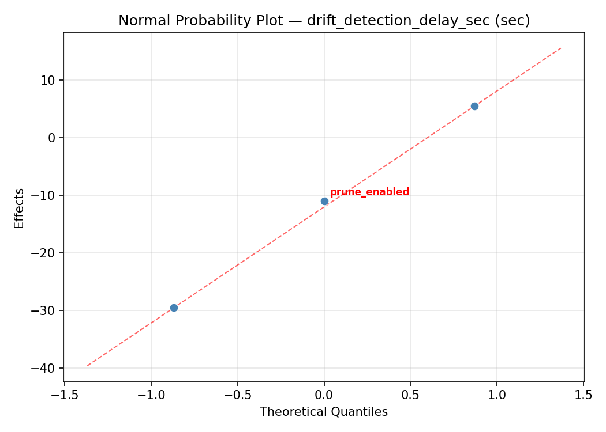
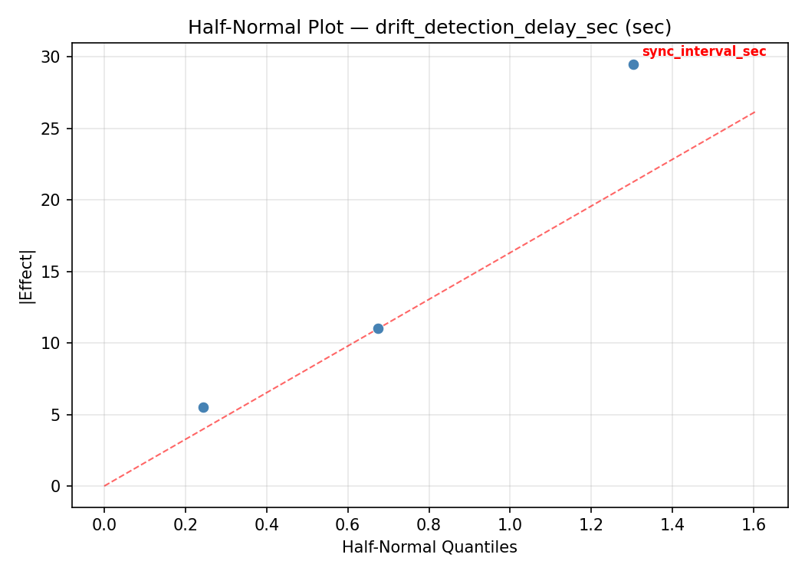
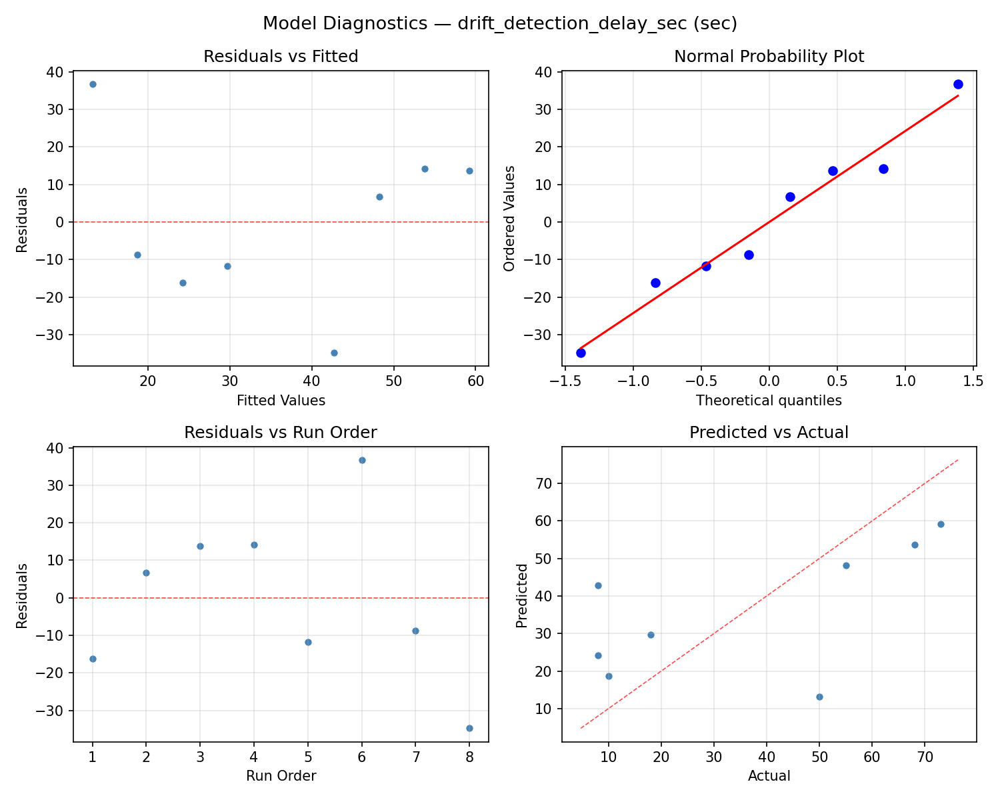
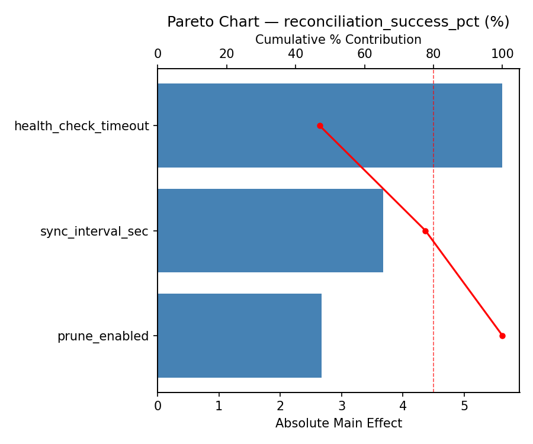
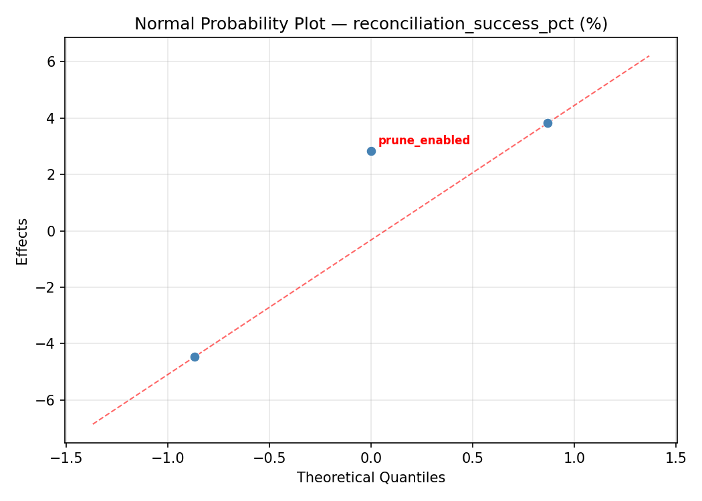
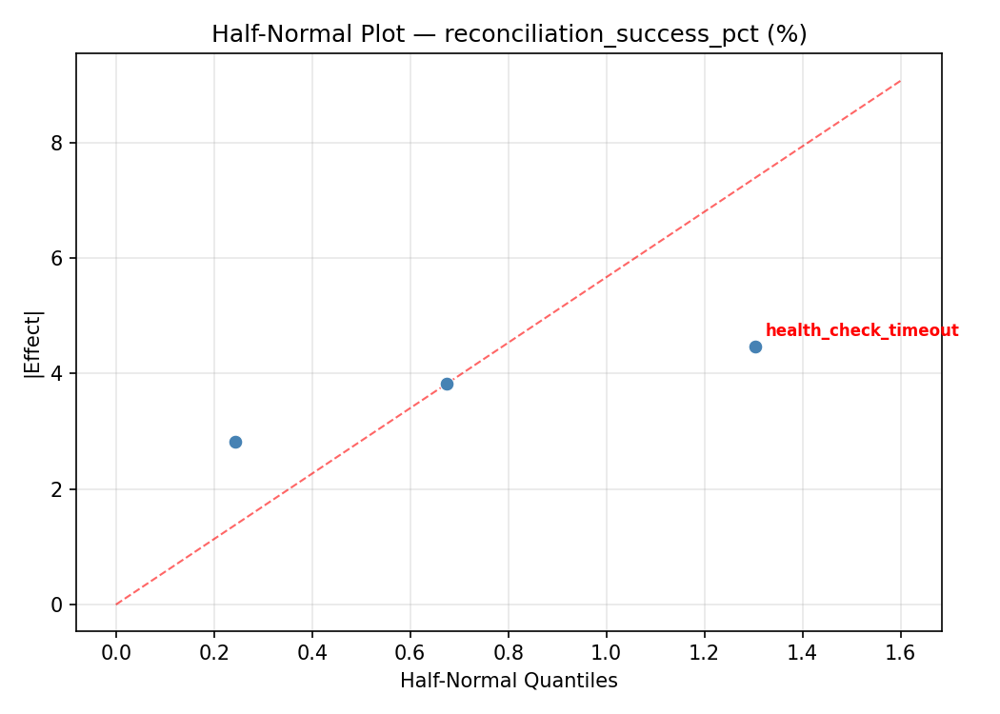
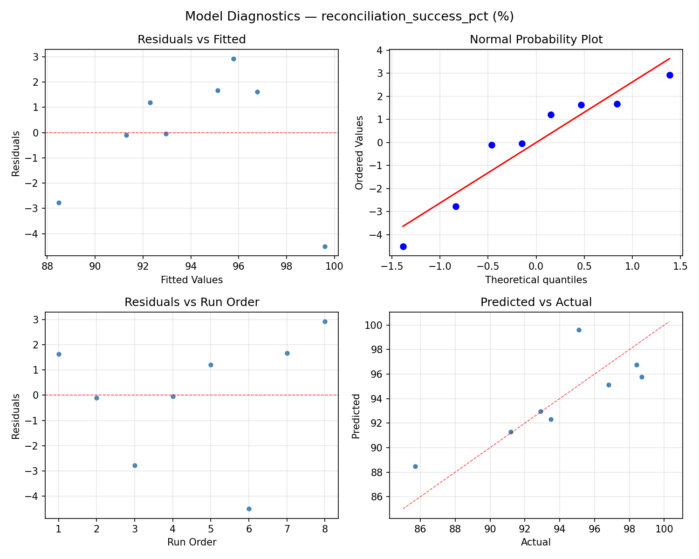

Summary
This experiment investigates gitops sync interval. Full factorial of sync interval, health check timeout, and prune enabled for drift detection and reconciliation.
The design varies 3 factors: sync interval sec (sec), ranging from 30 to 300, health check timeout (sec), ranging from 10 to 60, and prune enabled, ranging from off to on. The goal is to optimize 2 responses: drift detection delay sec (sec) (minimize) and reconciliation success pct (%) (maximize). Fixed conditions held constant across all runs include tool = argocd, cluster count = 3.
A full factorial design was used to explore all 8 possible combinations of the 3 factors at two levels. This guarantees that every main effect and interaction can be estimated independently, at the cost of a larger experiment (8 runs).
Key Findings
For drift detection delay sec, the most influential factors were health check timeout (54.1%), prune enabled (33.0%), sync interval sec (12.8%). The best observed value was 8.0 (at sync interval sec = 30, health check timeout = 60, prune enabled = on).
For reconciliation success pct, the most influential factors were health check timeout (66.8%), sync interval sec (20.5%), prune enabled (12.7%). The best observed value was 98.7 (at sync interval sec = 30, health check timeout = 10, prune enabled = off).
Recommended Next Steps
- Consider whether any fixed factors should be varied in a future study.
Experimental Setup
Factors
| Factor | Low | High | Unit |
|---|
sync_interval_sec | 30 | 300 | sec |
health_check_timeout | 10 | 60 | sec |
prune_enabled | off | on | |
Fixed: tool = argocd, cluster_count = 3
Responses
| Response | Direction | Unit |
|---|
drift_detection_delay_sec | ↓ minimize | sec |
reconciliation_success_pct | ↑ maximize | % |
Configuration
{
"metadata": {
"name": "GitOps Sync Interval",
"description": "Full factorial of sync interval, health check timeout, and prune enabled for drift detection and reconciliation"
},
"factors": [
{
"name": "sync_interval_sec",
"levels": [
"30",
"300"
],
"type": "continuous",
"unit": "sec"
},
{
"name": "health_check_timeout",
"levels": [
"10",
"60"
],
"type": "continuous",
"unit": "sec"
},
{
"name": "prune_enabled",
"levels": [
"off",
"on"
],
"type": "categorical",
"unit": ""
}
],
"fixed_factors": {
"tool": "argocd",
"cluster_count": "3"
},
"responses": [
{
"name": "drift_detection_delay_sec",
"optimize": "minimize",
"unit": "sec"
},
{
"name": "reconciliation_success_pct",
"optimize": "maximize",
"unit": "%"
}
],
"settings": {
"operation": "full_factorial",
"test_script": "use_cases/82_gitops_sync_interval/sim.sh"
}
}
Experimental Matrix
The Full Factorial Design produces 8 runs. Each row is one experiment with specific factor settings.
| Run | sync_interval_sec | health_check_timeout | prune_enabled |
|---|
| 1 | 30 | 60 | on |
| 2 | 300 | 10 | off |
| 3 | 300 | 60 | off |
| 4 | 300 | 60 | on |
| 5 | 30 | 60 | off |
| 6 | 300 | 10 | on |
| 7 | 30 | 10 | off |
| 8 | 30 | 10 | on |
Step-by-Step Workflow
1
Preview the design
$ doe info --config use_cases/82_gitops_sync_interval/config.json
2
Generate the runner script
$ doe generate --config use_cases/82_gitops_sync_interval/config.json \
--output use_cases/82_gitops_sync_interval/results/run.sh --seed 42
3
Execute the experiments
$ bash use_cases/82_gitops_sync_interval/results/run.sh
4
Analyze results
$ doe analyze --config use_cases/82_gitops_sync_interval/config.json
5
Get optimization recommendations
$ doe optimize --config use_cases/82_gitops_sync_interval/config.json
6
Multi-objective optimization
With 2 competing responses, use --multi to find the best compromise via Derringer–Suich desirability.
$ doe optimize --config use_cases/82_gitops_sync_interval/config.json --multi
7
Generate the HTML report
$ doe report --config use_cases/82_gitops_sync_interval/config.json \
--output use_cases/82_gitops_sync_interval/results/report.html
Features Exercised
| Feature | Value |
|---|
| Design type | full_factorial |
| Factor types | continuous (2), categorical (1) |
| Arg style | double-dash |
| Responses | 2 (drift_detection_delay_sec ↓, reconciliation_success_pct ↑) |
| Total runs | 8 |
Analysis Results
Generated from actual experiment runs using the DOE Helper Tool.
Response: drift_detection_delay_sec
Top factors: health_check_timeout (54.1%), prune_enabled (33.0%), sync_interval_sec (12.8%).
ANOVA
| Source | DF | SS | MS | F | p-value |
|---|
| Source | DF | SS | MS | F | p-value |
| sync_interval_sec | 1 | 98.0000 | 98.0000 | 2.420 | 0.3637 |
| health_check_timeout | 1 | 1740.5000 | 1740.5000 | 42.975 | 0.0964 |
| prune_enabled | 1 | 648.0000 | 648.0000 | 16.000 | 0.1560 |
| sync_interval_sec*health_check_timeout | 1 | 2048.0000 | 2048.0000 | 50.568 | 0.0889 |
| sync_interval_sec*prune_enabled | 1 | 924.5000 | 924.5000 | 22.827 | 0.1313 |
| health_check_timeout*prune_enabled | 1 | 18.0000 | 18.0000 | 0.444 | 0.6257 |
| Error | 1 | 40.5000 | 40.5000 | | |
| Total | 7 | 5517.5000 | 788.2143 | | |
Pareto Chart

Main Effects Plot

Normal Probability Plot of Effects

Half-Normal Plot of Effects

Model Diagnostics

Response: reconciliation_success_pct
Top factors: health_check_timeout (66.8%), sync_interval_sec (20.5%), prune_enabled (12.7%).
ANOVA
| Source | DF | SS | MS | F | p-value |
|---|
| Source | DF | SS | MS | F | p-value |
| sync_interval_sec | 1 | 2.7612 | 2.7612 | 0.102 | 0.8030 |
| health_check_timeout | 1 | 29.2613 | 29.2613 | 1.083 | 0.4873 |
| prune_enabled | 1 | 1.0513 | 1.0513 | 0.039 | 0.8760 |
| sync_interval_sec*health_check_timeout | 1 | 40.0512 | 40.0512 | 1.483 | 0.4377 |
| sync_interval_sec*prune_enabled | 1 | 27.0112 | 27.0112 | 1.000 | 0.5000 |
| health_check_timeout*prune_enabled | 1 | 1.5312 | 1.5312 | 0.057 | 0.8512 |
| Error | 1 | 27.0113 | 27.0113 | | |
| Total | 7 | 128.6787 | 18.3827 | | |
Pareto Chart

Main Effects Plot

Normal Probability Plot of Effects

Half-Normal Plot of Effects

Model Diagnostics

Response Surface Plots
3D surfaces fitted with quadratic RSM. Red dots are observed data points.
drift detection delay sec sync interval sec vs health check timeout

reconciliation success pct sync interval sec vs health check timeout

Multi-Objective Optimization
When responses compete, Derringer–Suich desirability finds the best compromise.
Each response is scaled to a 0–1 desirability, then combined via a weighted geometric mean.
Overall Desirability
D = 0.9545
Per-Response Desirability
| Response | Weight | Desirability | Predicted | Dir |
|---|
drift_detection_delay_sec |
1.0 |
|
8.00 0.9545 8.00 sec |
↓ |
reconciliation_success_pct |
1.5 |
|
98.70 0.9545 98.70 % |
↑ |
Recommended Settings
| Factor | Value |
|---|
sync_interval_sec | 30 sec |
health_check_timeout | 60 sec |
prune_enabled | on |
Source: from observed run #8
Trade-off Summary
Sacrifice = how much worse than single-objective best.
| Response | Predicted | Best Observed | Sacrifice |
|---|
reconciliation_success_pct | 98.70 | 98.70 | +0.00 |
Top 3 Runs by Desirability
| Run | D | Factor Settings |
|---|
| #1 | 0.9419 | sync_interval_sec=300, health_check_timeout=60, prune_enabled=on |
| #7 | 0.8621 | sync_interval_sec=30, health_check_timeout=10, prune_enabled=on |
Model Quality
| Response | R² | Type |
|---|
reconciliation_success_pct | 0.4588 | linear |
Full Multi-Objective Output
============================================================
MULTI-OBJECTIVE OPTIMIZATION
Method: Derringer-Suich Desirability Function
============================================================
Overall desirability: D = 0.9545
Response Weight Desirability Predicted Direction
---------------------------------------------------------------------
drift_detection_delay_sec 1.0 0.9545 8.00 sec ↓
reconciliation_success_pct 1.5 0.9545 98.70 % ↑
Recommended settings:
sync_interval_sec = 30 sec
health_check_timeout = 60 sec
prune_enabled = on
(from observed run #8)
Trade-off summary:
drift_detection_delay_sec: 8.00 (best observed: 8.00, sacrifice: +0.00)
reconciliation_success_pct: 98.70 (best observed: 98.70, sacrifice: +0.00)
Model quality:
drift_detection_delay_sec: R² = 0.2372 (linear)
reconciliation_success_pct: R² = 0.4588 (linear)
Top 3 observed runs by overall desirability:
1. Run #8 (D=0.9545): sync_interval_sec=30, health_check_timeout=60, prune_enabled=on
2. Run #1 (D=0.9419): sync_interval_sec=300, health_check_timeout=60, prune_enabled=on
3. Run #7 (D=0.8621): sync_interval_sec=30, health_check_timeout=10, prune_enabled=on
Full Analysis Output
=== Main Effects: drift_detection_delay_sec ===
Factor Effect Std Error % Contribution
--------------------------------------------------------------
health_check_timeout 29.5000 9.9261 54.1%
prune_enabled 18.0000 9.9261 33.0%
sync_interval_sec 7.0000 9.9261 12.8%
=== ANOVA Table: drift_detection_delay_sec ===
Source DF SS MS F p-value
-----------------------------------------------------------------------------
sync_interval_sec 1 98.0000 98.0000 2.420 0.3637
health_check_timeout 1 1740.5000 1740.5000 42.975 0.0964
prune_enabled 1 648.0000 648.0000 16.000 0.1560
sync_interval_sec*health_check_timeout 1 2048.0000 2048.0000 50.568 0.0889
sync_interval_sec*prune_enabled 1 924.5000 924.5000 22.827 0.1313
health_check_timeout*prune_enabled 1 18.0000 18.0000 0.444 0.6257
Error 1 40.5000 40.5000
Total 7 5517.5000 788.2143
=== Interaction Effects: drift_detection_delay_sec ===
Factor A Factor B Interaction % Contribution
------------------------------------------------------------------------
sync_interval_sec health_check_timeout 32.0000 56.6%
sync_interval_sec prune_enabled -21.5000 38.1%
health_check_timeout prune_enabled 3.0000 5.3%
=== Summary Statistics: drift_detection_delay_sec ===
sync_interval_sec:
Level N Mean Std Min Max
------------------------------------------------------------
30 4 32.7500 23.2576 8.0000 55.0000
300 4 39.7500 35.5750 8.0000 73.0000
health_check_timeout:
Level N Mean Std Min Max
------------------------------------------------------------
10 4 21.5000 19.4850 8.0000 50.0000
60 4 51.0000 29.6536 8.0000 73.0000
prune_enabled:
Level N Mean Std Min Max
------------------------------------------------------------
off 4 27.2500 30.8045 8.0000 73.0000
on 4 45.2500 25.9663 8.0000 68.0000
=== Main Effects: reconciliation_success_pct ===
Factor Effect Std Error % Contribution
--------------------------------------------------------------
health_check_timeout -3.8250 1.5159 66.8%
sync_interval_sec -1.1750 1.5159 20.5%
prune_enabled 0.7250 1.5159 12.7%
=== ANOVA Table: reconciliation_success_pct ===
Source DF SS MS F p-value
-----------------------------------------------------------------------------
sync_interval_sec 1 2.7612 2.7612 0.102 0.8030
health_check_timeout 1 29.2613 29.2613 1.083 0.4873
prune_enabled 1 1.0513 1.0513 0.039 0.8760
sync_interval_sec*health_check_timeout 1 40.0512 40.0512 1.483 0.4377
sync_interval_sec*prune_enabled 1 27.0112 27.0112 1.000 0.5000
health_check_timeout*prune_enabled 1 1.5312 1.5312 0.057 0.8512
Error 1 27.0113 27.0113
Total 7 128.6787 18.3827
=== Interaction Effects: reconciliation_success_pct ===
Factor A Factor B Interaction % Contribution
------------------------------------------------------------------------
sync_interval_sec health_check_timeout -4.4750 49.6%
sync_interval_sec prune_enabled 3.6750 40.7%
health_check_timeout prune_enabled -0.8750 9.7%
=== Summary Statistics: reconciliation_success_pct ===
sync_interval_sec:
Level N Mean Std Min Max
------------------------------------------------------------
30 4 94.6250 3.1532 91.2000 98.7000
300 4 93.4500 5.6595 85.7000 98.4000
health_check_timeout:
Level N Mean Std Min Max
------------------------------------------------------------
10 4 95.9500 2.1174 93.5000 98.4000
60 4 92.1250 5.3531 85.7000 98.7000
prune_enabled:
Level N Mean Std Min Max
------------------------------------------------------------
off 4 93.6750 5.7343 85.7000 98.7000
on 4 94.4000 3.1081 91.2000 98.4000
Optimization Recommendations
=== Optimization: drift_detection_delay_sec ===
Direction: minimize
Best observed run: #1
sync_interval_sec = 30
health_check_timeout = 60
prune_enabled = on
Value: 8.0
RSM Model (linear, R² = 0.2072, Adj R² = -0.3875):
Coefficients:
intercept +36.2500
sync_interval_sec +2.7500
health_check_timeout -10.2500
prune_enabled -5.5000
Predicted optimum (from linear model, at observed points):
sync_interval_sec = 300
health_check_timeout = 10
prune_enabled = off
Predicted value: 54.7500
Surface optimum (via L-BFGS-B, linear model):
sync_interval_sec = 30
health_check_timeout = 60
prune_enabled = on
Predicted value: 17.7500
Model quality: Weak fit — consider adding center points or using a different design.
Factor importance:
1. health_check_timeout (effect: -20.5, contribution: 55.4%)
2. prune_enabled (effect: -11.0, contribution: 29.7%)
3. sync_interval_sec (effect: 5.5, contribution: 14.9%)
=== Optimization: reconciliation_success_pct ===
Direction: maximize
Best observed run: #8
sync_interval_sec = 30
health_check_timeout = 10
prune_enabled = off
Value: 98.7
RSM Model (linear, R² = 0.5379, Adj R² = 0.1913):
Coefficients:
intercept +94.0375
sync_interval_sec -2.2375
health_check_timeout +1.3625
prune_enabled +1.3375
Predicted optimum (from linear model, at observed points):
sync_interval_sec = 30
health_check_timeout = 60
prune_enabled = on
Predicted value: 98.9750
Surface optimum (via L-BFGS-B, linear model):
sync_interval_sec = 30
health_check_timeout = 60
prune_enabled = on
Predicted value: 98.9750
Model quality: Moderate fit — use predictions directionally, not precisely.
Factor importance:
1. sync_interval_sec (effect: -4.5, contribution: 45.3%)
2. health_check_timeout (effect: 2.7, contribution: 27.6%)
3. prune_enabled (effect: 2.7, contribution: 27.1%)